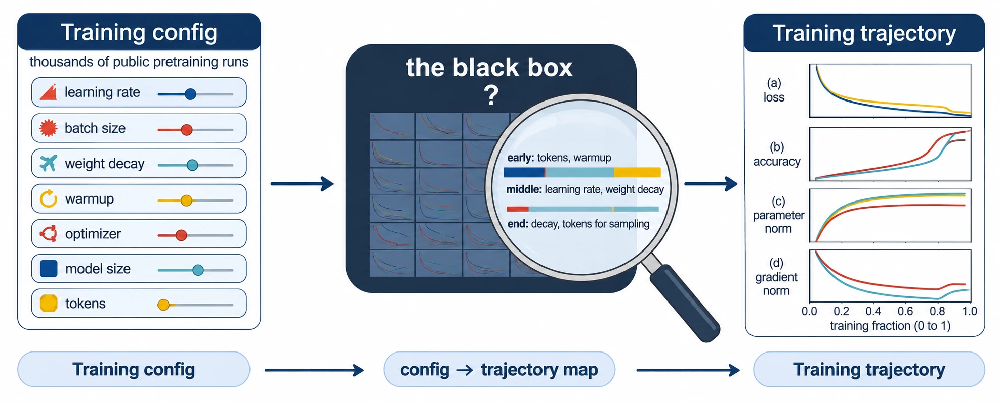

Towards smaller and more interpretable prediction models
Understanding the training dynamics of a model from its training config is notoriously hard. Theory can describe the dynamics in simpler settings. Central flows[1] model the time-averaged path of gradient descent and RMSProp at the edge of stability, and they follow the training of real networks closely. They are derived for deterministic, full-batch optimizers, one optimizer at a time, so they do not yet cover the many knobs of a pretraining config.
Recent work treats the question as a prediction problem and fits a black-box model to many past training runs. For example, NCPL[2] fine-tunes Qwen3-1.7B to predict the loss curve from the training config. More recently, Meta Models[3] replaces Qwen with a frozen TabPFN v3, a pretrained tabular model that reads the training runs as context. Both predict the loss curves of larger models held out from training (out of distribution, OOD). Meta Models also shows that TabPFN can track the gradient norm and the parameter norm during training.

However, the prediction model is still a black box with many parameters. This makes it hard to disentangle how each hyperparameter affects the training dynamics: the loss, the parameter norm, the gradient norm and downstream accuracy. This post records our attempt to open the black box. We look for the smallest prediction models that still predict well, and then read what they show along training.
Searching for the smallest interpretable model
We use two public sets of runs, Marin and StepLaw, with the split of both prior works[2], [3]. Marin is an open-source project that releases its pretraining runs, code and results[4], and its runs come from the optimizer study of Wen et al.[5]. StepLaw is a sweep over learning rate and batch size[6]. Table 1 lists what each set varies. Runs with more than 430M non-embedding parameters form the OOD test set. In the appendix we run the same experiments on three more public sets of runs.
| input | Marin | StepLaw | |
|---|---|---|---|
| Scale | model size (non-embedding) | 135M to 1.2B | 60M to 1.07B |
| training tokens | 2.6B to 193B | 2B to 100B | |
| architecture (heads, hidden size) | varied | varied, also layers | |
| Batch | batch size | 128 to 1,024 seq. | 16 to 2,048 seq. |
| Optimizer | optimizer type | 11 types | AdamW |
| peak learning rate | 5e-4 to 0.13 | 2.4e-4 to 0.022 | |
| second LR (Muon-type) | 8e-4 to 0.026 | N/A | |
| weight decay | 0 to 1 | N/A | |
| beta2 | 0.9 to 0.995 | N/A | |
| beta1, epsilon, clipping | varied | N/A | |
| Schedule | schedule type | 2 types | N/A |
| warmup (fraction of steps) | 0 to 0.78 | 0.001 to 1.7 | |
| final-to-peak LR ratio | 0 to 0.05 | 5e-4 to 0.04 | |
| Data | data mix or recipe | N/A | N/A |
| Position | points per run (training fraction) | 4 to 24 | 2 to 29 |
| runs: train / ID / OOD | 1,708 / 426 / 415 | 1,517 / 370 / 694 | |
| OOD model size | > 430M | > 430M |
Similar to prior work, we predict the residual: the measured loss minus a Chinchilla law of model size and the run's total tokens. The Chinchilla term is the same at every point of a run, so the residual holds all of the change of the loss during training. Errors are mean absolute errors (MAE) in nats of loss.
A smaller TabPFN checkpoint is the first thing to try. We find that smaller checkpoints give a similar error or only a minor degradation.
Next we distill TabPFN into small students from four families, which differ in how much of them we can read. MLPs and boosted trees are black boxes. The Recursive Feature Machine (RFM)[7] is a kernel machine whose learned metric shows which input directions matter, so we call it partly interpretable. Splines whose curves change with the training fraction are a sum of one-dimensional curves that can be plotted, so we call them interpretable. Each student is fitted to TabPFN's predictions for the training configs and for 10,000 nearby configs, so it never sees the measured losses.
Meta Models can also predict internal dynamics, such as the parameter norm and the gradient norm, and downstream accuracy[3]. We try the small model families on these targets too, fitted to the measured values of the Marin runs.
As the Meta Models paper also reports, none of the models captures the norms perfectly, and they often miss the level of a run. All of them follow the trend, though: the parameter norm rises until about mid-training and then falls a little, and the gradient norm falls early in training and then rises (Figure 5).
MLP
From here on, each family is fitted directly to the measured curves of the training runs in Table 1, with the training fraction as one more input. The MLP is the smallest black box. It clips each input to the range the training runs cover, standardizes it, and passes the config and the training fraction through two hidden layers to the residual (Figure 6).
We read the MLP with SHAP[8], which splits one prediction into a contribution from each input. The contribution of an input is its Shapley value: the change of the prediction when that input is revealed, averaged over all orders in which the inputs can be revealed, with the inputs not yet revealed taken from other training runs. The contributions of all inputs add up to the prediction minus the average prediction. SHAP needs only predictions, so it applies to any model, TabPFN included.
To see how the attribution changes during training, we fit the MLP once on all points of all training curves. We then set the training fraction of every run to the same value \(t\), for 40 values of \(t\) between 1% and 100% of training, and compute the contributions for 150 training runs. The share of a knob at \(t\) is the average size of its contribution divided by the sum over all inputs, so the shares of all inputs add up to 1 at every \(t\) (Figure 7).
On both loss curves the prediction moves from one knob to another during training. On the Marin loss the token budget drives the prediction early, partly because at the same training fraction a longer run has seen more tokens. From about 15% of training on, the peak learning rate and weight decay take over, and the learning rate stays the largest knob until the end. StepLaw shows the same move: the token budget fades early, the learning rate peaks about a third of the way through training, and the batch size peaks about halfway.
The other quantities follow a different order. For the parameter norm, the warmup fraction matters most at the start, and soon after the optimizer type becomes the largest knob, which fits the large differences in the logged parameter norm between optimizers. For downstream accuracy the token budget grows in importance toward the end of training. Which knob matters therefore depends on what is predicted and on when in training it is read.
Splines
The spline model gives every knob a curve that moves during training:
where \(\hat r\) is the predicted residual, \(x_j\) is one knob, \(t\) is the training fraction, and the \(\phi_m\) and \(\psi_n\) are cubic spline basis functions. This is a varying-coefficient model[9]: at each fraction it reads one curve per knob at the run's config and adds the readings (Figure 8).
The model can be read exactly, but it has no interactions. We add one interaction term at a time, a product of the same basis functions over a group of two, three or four knobs, and measure how each term changes the error on the larger held-out models. For comparison, we also measure each knob's own term, by adding it back to the additive model without it.
Except for the gradient norm, interactions of three or four knobs lower the held-out error about as much as pairs: more on the parameter norm, about the same on the Marin loss and accuracy, and about two thirds as much on StepLaw. Higher-order interactions therefore still matter on the larger models. On the gradient norm the best pair, the optimizer type with beta2, does clearly better than any larger group, partly because beta2 is not a candidate in the larger groups. A knob's own term is larger than any interaction on the Marin loss and accuracy, about as large as the best pairs on StepLaw, and smaller than the best interactions on both norms.
One coupling stands out. On StepLaw the learning rate with batch size lowers the error most on held-out runs at the training sizes, yet it is missing from Figure 9 because it raises the error on the larger models. The learning rate's own term behaves the same way. Both help only when model size enters the same term, which matches StepLaw's own law, in which the best learning rate depends on model size[6].
Boosted trees
A boosted model adds the leaf values of many small trees. Each tree asks a few yes/no questions about the inputs and is fitted to what the earlier trees still miss[10]. The model in Figure 10 has 100 trees of 8 leaves for the Marin loss.
The first trees make the largest corrections, and they ask almost only about the training fraction and warmup (the grey bars in Figure 10). Boosting fits each tree to what the earlier trees still miss, so the first trees take the largest source of variation in the target. That source is time: the training fraction alone explains 75% of the variance of the residual across the training rows, because the residual of every run falls during training (Figure 8). Once the trees have fitted this average curve, what remains depends on the config, and most of the later, smaller corrections come from trees led by the learning rate and weight decay.
Recursive Feature Machine (RFM)
The RFM[7] predicts a run from its similarity to stored training runs, the centres. Similarity uses a learned metric \(M\): the distance between inputs \(z\) and \(c\) is \(d(z, c) = \sqrt{(z-c)^{\top} M (z-c)}\). The RFM sets \(M\), over several rounds, to the average gradient outer product (AGOP) of the fitted model, so the input directions along which the prediction changes quickly count most (Figure 11).
To read the RFM along training we proceed as for the MLP. At each of the 40 training fractions \(t\), we set every training run to \(t\) and compute the AGOP of the fitted model over those runs. Its top eigenvector is the combination of knobs along which the prediction changes most at that point (Figure 12).
Early in training the prediction moves mostly with tokens and warmup. Within the first fifth of training, the main direction on StepLaw turns to raising the learning rate and lowering the batch size, roughly along their ratio, and on Marin it turns to weight decay and the learning rate. On Marin the trees in Figure 10 ask about the same pair together more often than any other. In the spline test both couplings help on larger models only when model size enters the same term: the learning rate with weight decay on Marin, and the learning rate with batch size on StepLaw.
An autoresearch benchmark
Figure 3 suggests a search from right to left: start at TabPFN, propose a smaller or more interpretable model, fit it, and keep it if its OOD error stays low. This search could be a benchmark for automated research agents.
- Cheap iteration. On one NVIDIA RTX A5000, TabPFN v3 fits and predicts in under half a minute with the Marin training runs as context, and most students fit in a few seconds, so an agent can try hundreds of candidate models in one GPU-hour.
- Clear goal. The agent gets the training runs of a sweep and returns a model. A fixed script counts its parameters and scores its OOD error on test runs that the agent never sees. The target is the smallest interpretable model at or below the error of TabPFN.
- A checkable notion of interpretability. A model counts as interpretable when the effect of each hyperparameter on the prediction can be disentangled from the others, for example a sum of curves in one or two knobs. The splines in this post meet this definition but fall behind TabPFN on the curves, so the goal is still open.
Future directions
- Interventions. This study is observational. Other groups designed the sweeps for other purposes, and some inputs move together, so a fitted effect is not necessarily causal. A few interventions, such as ablations that change one hyperparameter at a time, could be added on top of the large public sweeps. Causal inference has methods that combine a small number of interventions with large observational data[11], [12].
- Project dependence. A fitted model may only hold within the project whose runs it was fitted on. Transfer across projects is likely hard, because projects differ in many confounding factors besides the knobs in Table 1.
- More data. More observational data would help, and we encourage groups to release full training traces together with their configs, which costs no extra compute.
Acknowledgements
We thank Kaiyue Wen and Jiaxuan Zou for helpful discussions and feedback.
References
- Jeremy M. Cohen, Alex Damian, Ameet Talwalkar, J. Zico Kolter, Jason D. Lee. Understanding Optimization in Deep Learning with Central Flows. ICLR 2025. arXiv:2410.24206. arxiv.org/abs/2410.24206
- Huaqing Zhang, Kaiyue Wen, Tengyu Ma. Configuration-to-Performance Scaling Law with Neural Ansatz. arXiv:2602.10300, 2026. arxiv.org/abs/2602.10300
- Peihang Li, Ziming Liu. Meta Models: Models that Model Learning. arXiv:2610.37001, 2026. arxiv.org/abs/2610.37001
- Marin project. marin.community
- Kaiyue Wen, David Hall, Tengyu Ma, Percy Liang. Fantastic Pretraining Optimizers and Where to Find Them. arXiv:2509.02046, 2025. arxiv.org/abs/2509.02046
- Houyi Li, Wenzhen Zheng, Qiufeng Wang, et al. Predictable Scale: Part I, Step Law. Optimal Hyperparameter Scaling Law in Large Language Model Pretraining. arXiv:2503.04715, 2025. arxiv.org/abs/2503.04715
- Adityanarayanan Radhakrishnan, Daniel Beaglehole, Parthe Pandit, Mikhail Belkin. Mechanism for feature learning in neural networks and backpropagation-free machine learning models. Science 383, 2024. doi:10.1126/science.adi5639
- Scott M. Lundberg, Su-In Lee. A Unified Approach to Interpreting Model Predictions. NeurIPS 2017. arXiv:1705.07874. arxiv.org/abs/1705.07874
- Trevor Hastie, Robert Tibshirani. Varying-Coefficient Models. Journal of the Royal Statistical Society, Series B 55(4), 757-796, 1993. doi:10.1111/j.2517-6161.1993.tb01939.x
- Jerome H. Friedman. Greedy Function Approximation: A Gradient Boosting Machine. Annals of Statistics 29(5), 1189-1232, 2001. doi:10.1214/aos/1013203451
- Elias Bareinboim, Judea Pearl. Causal inference and the data-fusion problem. Proceedings of the National Academy of Sciences 113(27), 7345-7352, 2016. doi:10.1073/pnas.1510507113
- AmirEmad Ghassami, Saber Salehkaleybar, Negar Kiyavash, Elias Bareinboim. Budgeted experiment design for causal structure learning. ICML 2018, PMLR 80. proceedings.mlr.press/v80/ghassami18a.html
- Tomer Porian, Mitchell Wortsman, Jenia Jitsev, et al. Resolving Discrepancies in Compute-Optimal Scaling of Language Models. NeurIPS 2024. arXiv:2406.19146. arxiv.org/abs/2406.19146
- Lingbei Meng, Rui Huang, Zhirong Shen, et al. SLDBench v2: Active Scaling Law Discovery. arXiv:2610.16297, 2026. arxiv.org/abs/2610.16297
- Ian Magnusson, Nguyen Tai, Ben Bogin, et al. DataDecide: How to Predict Best Pretraining Data with Small Experiments. ICML 2025. arXiv:2504.11393. arxiv.org/abs/2504.11393
- Margaret Li, Sneha Kudugunta, Luke Zettlemoyer. (Mis)Fitting: A Survey of Scaling Laws. ICLR 2025. arXiv:2502.18969. arxiv.org/abs/2502.18969
Appendix: three more sets of runs
We fit the same four model families to the measured losses of three more public sets of runs. The sweep of Porian et al.[13] varies model size, tokens, learning rate, batch size, beta2, warmup, the learning-rate schedule and the data set, and we use its copy in SLDBench v2[14]. DataDecide[15] varies model size, tokens and the data recipe, and (Mis)Fitting[16] varies model size, tokens and learning rate. As for Marin and StepLaw, the largest models form the OOD test set: from 221M parameters for Porian et al., 530M for DataDecide and 303M for (Mis)Fitting.
On Porian et al. MLPs with 5,000 to 18,000 parameters reach a curve error of 0.061 to 0.068, against 0.091 for TabPFN v3. On DataDecide TabPFN stays ahead, at 0.018 against 0.026 for the best boosted trees. On (Mis)Fitting the best MLP and TabPFN are level on both the curve and the final loss. The splines fall far behind on Porian et al. and (Mis)Fitting.